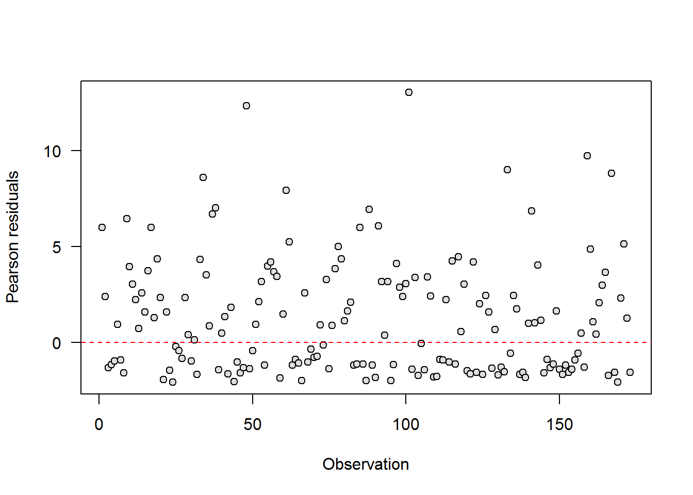
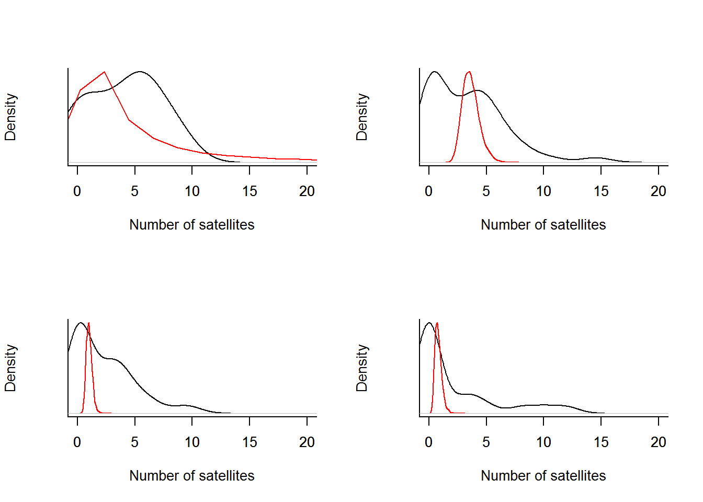
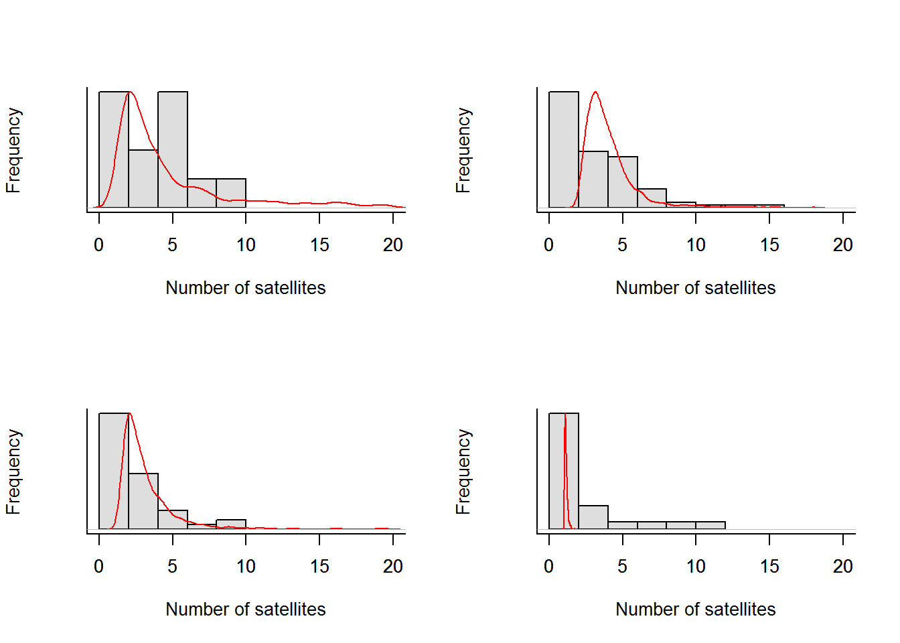

This week in class, we introduced GLM formulations of count models using either Poisson or negative binomial error distributions. Along with these ideas, we discussed concepts relating to transformations for exploratory variables and some basic model diagnostics for the GLM in these situations. During lab this week, we will continue to expand on these ideas, and we will reinforce concepts related to model selection and validation that we have talked about in other sections.
For our purposes this week, we will continue to delve further into count models that use Poisson and negative binomial error distributions. We will make predictions from these models, talk about standardized effects, and continue to learn more about writing methods and results for these approaches. We will work with the same models we formulated under the frequentist mode of interest earlier this week, but now we will cast these analyses in a Bayesian framework.
We are going to continue working with the crabs data this week in lab. In case you need a refresher on those data, here it is:
These data represent the number of satellite male crabs per female (rows) horseshoe crab in relation to a number of characteristics of the females, including their color, spine condition, carapace width, and mass (g).
The full citation for the paper that this data set is based on: H. J. Brockmann. 1996. Satellite male groups in horseshoe crabs, Limulus polyphemus. Ethology 102:1-21. doi:10.1111/j.1439-0310.1996.tb01099.x
Read in the data, and recall that we want to be working with color, and spine as categorical variables since these are both classification schemes and not actually numeric data.
# Read in the data
crabs = read.csv('http://employees.oneonta.edu/stichds/data/crabs.csv', header = TRUE)
# Take a look at the first few rows of the dataframe
head(crabs, 10)## color spine width mass satellites
## 1 2 3 28.3 3.05 8
## 2 3 3 26.0 2.60 4
## 3 3 3 25.6 2.15 0
## 4 4 2 21.0 1.85 0
## 5 2 3 29.0 3.00 1
## 6 1 2 25.0 2.30 3
## 7 4 3 26.2 1.30 0
## 8 2 3 24.9 2.10 0
## 9 2 1 25.7 2.00 8
## 10 2 3 27.5 3.15 6Did you make sure that the variables color and spine were stored as either factors or character variables? If not, go ahead and change their data type now.
Don’t forget to make sure you did it correctly:
# Have a look at the data structure
str(crabs)## 'data.frame': 173 obs. of 5 variables:
## $ color : Factor w/ 4 levels "1","2","3","4": 2 3 3 4 2 1 4 2 2 2 ...
## $ spine : Factor w/ 3 levels "1","2","3": 3 3 3 2 3 2 3 3 1 3 ...
## $ width : num 28.3 26 25.6 21 29 25 26.2 24.9 25.7 27.5 ...
## $ mass : num 3.05 2.6 2.15 1.85 3 2.3 1.3 2.1 2 3.15 ...
## $ satellites: int 8 4 0 0 1 3 0 0 8 6 ...Let’s get started! Our first challenge here is to fit a count model describing the variability in satellite males as some function of female characteristics. Let’s start by building a model that uses only color as an explanatory variable. We can liken this to doing and ANOVA to test the effects of color on satellites. So, if you are following along in your text book, we are somewhere between the models presented in chapters 13 and those presented in chapter 15.
We can formulate this model in a pretty straightforward way by using the same conventions that we have used during the past couple of weeks for Bayesian models written in the BUGS language. Here, we will estimate separate intercepts for each of the color variants in the data set:
If we wanted to write out the likelihood and the model by hand, it might look something like what follows. We are assuming that the ith response (number of satellites) within each jth level of the variable color is drawn from a Poisson distribution with a mean and variance of \(\lambda\). We start by writing the likelihood for the ith value of \(N\) with respect to the ith value of \(\lambda\):
\[N_i = Poisson(\lambda_{i})\]
We can then specify the linear predictor on the link scale (log in this case, because we are modeling count data) to specify the model. In this case, we don’t specify any betas because we are estimating group-specific intercepts.
\[log(\lambda_{i}) = \alpha_{i_j}\]
This approach accomplishes the same thing as dummy coding color and writing \(log(\lambda_i) = \beta_0 + \beta_1 \cdot x_1 + \beta_2 \cdot x_2 + \beta_3 \cdot x_3\), but the former easier to write out in notation and in the BUGS language. It also makes it easier to communicate means. If we want relative effect sizes, we can just calculate them by doing simple algebra with the posteriors.
And, finally, we assume that the ith value of is drawn from a normal distribution on the link scale, dependent upon the color (j) of the female crab in the ith observation. We specify the prior on alpha for each jth color as a diffuse, normal distribution with a mean (\(\mu\)) of zero and a variance (\(\sigma^2\)) of 100 (in BUGS language \(\tau = 0.01\)).
\[\alpha_{j} = Normal(0, 0.01)\]
Specify* the model for JAGS
Here, we add in a few calculations so we can assess model fit (see Chapter 13.5-13.5.1 in Kery [2010] for explanations). Essentially, what we are going to do here is calculate the predicted and fitted residuals so we can make (1) a residual plot and (2) a predicted vs fitted plot of sorts.
Note that we put this code inside the same loop as the likelihood because it is also looping over each observation in the data. This decision has nothing to do with statistics and everything to do with programming. A sinlge, loop containing multiple tasks in JAGS is evaluated faster than multiple smaller loops containing only a single task. We could just as easily write the code for fit assessment in a separate loop that iterates over operations. It would just be a little slower to run.
modelstring="
model {
# Likelihood and residuals
for(i in 1:nobs){
# Likelihood
N[i] ~ dpois(lambda[i])
log(lambda[i]) <- alpha[color[i]] + beta[color[i]]*mass[i]
# Calculations for assessing model fit
# Pearson residuals (aka standardized residuals)
pResid[i] <- N[i] - lambda[i]/sqrt(lambda[i])
# Make a new set of observations
# that conform perfectly to the posterior distribution
N.new[i] ~ dpois(lambda[i])
# Pearson residuals for the data that conform perfectly
pResidN[i] <- N.new[i] - lambda[i]/sqrt(lambda[i])
# Calculate squared residuals for model fit and predictive fit
D[i] <- pow(pResid[i], 2)
Dnew[i] <- pow(pResidN[i], 2)
}
# Priors
for(j in 1:ncolors){
alpha[j] ~ dnorm(0, 0.01)
beta[j] ~ dnorm(0, 0.01)
}
# Discrepency measures
fitted <- sum(D[])
predicted <- sum(Dnew[])
}
"
writeLines(modelstring,con="crabsModel.txt")Model specification is the declaration of the mathematical formula that we use to relate our expalanatory variables to the response.
Create a list to hold the data for the model
# Package the data in a list
crabs.data = list(
nobs = nrow(crabs),
N = crabs$satellites,
color = crabs$color,
ncolors = length(unique(crabs$color)),
mass=crabs$mass
)Tell JAGS which parameters we wish to monitor
# Parameters monitored
parameters <- c('alpha', 'beta', 'pResid', 'fitted', 'predicted')Define a function that creates a list of initial values for each parameter
# Initial values
inits <- function(){list(
alpha=rnorm(length(unique(crabs$color)),0,1),
beta=rnorm(length(unique(crabs$color)),0,1)
)}Define objects to hold MCMC settings for model calibration
# MCMC settings
ni <- 7500 # Number of draws from posterior (for each chain)
nt <- 3 # Thinning rate
nb <- 2500 # Number of draws to discard as burn-in
nc <- 3 # Number of chainsFit (calibrate) the model using JAGS
Calibration is fitting the model to actual data
# Call jags and run the model
crabs.model <- jags(crabs.data, inits=inits, parameters, "crabsModel.txt",
n.chains = nc, n.thin = nt, n.iter = ni, n.burnin = nb,
working.directory = getwd())Print the model summary
# Print a summary of the model
print(crabs.model, digits = 2) Making sense of the results
Unfortunately, storing the residuals also means that we get the print out of the estimates in the model summary…But, we can summarize the model nicely by just printing out the components we really care about. Here, I select only the columns for mean, sd, 95% CRI, Rhat, and n.eff (columns 1-3, and 7-9 in the summary table) for our \(\alpha\) parameters and the deviance estimate (rows 1-5 of the summary table).
# Get the relevant information from the model summary
modSummary = crabs.model$BUGSoutput$summary[1:9, c(1:3, 7:9)]
# Print the model summary
print(modSummary, digits=2)## mean sd 2.5% 97.5% Rhat n.eff
## alpha[1] 1.916 1.018 -0.077 3.856 1.0 3700
## alpha[2] -0.053 0.226 -0.492 0.376 1.0 930
## alpha[3] -1.312 0.469 -2.232 -0.389 1.0 1400
## alpha[4] -1.470 0.733 -2.943 -0.066 1.0 4800
## beta[1] -0.205 0.387 -0.961 0.551 1.0 3900
## beta[2] 0.474 0.079 0.322 0.623 1.0 870
## beta[3] 0.875 0.180 0.519 1.221 1.0 2000
## beta[4] 0.960 0.304 0.358 1.567 1.0 5000
## deviance 905.030 30.860 898.554 913.676 1.1 5000And, if we need it, we can also get the DIC like this:
# Print out DIC value
crabs.model$BUGSoutput$DIC## [1] 1381.331Model diagnostics
At a quick glance, the summary table seems to indicate that our chains converged nicely and it looks like we got a good number of samples from our posteriors. I’m not making traceplots 178 parameters, but knock yourself out by all means.
Now that we have our wits back about us, let’s actually take a look at some residual plots!
Make a plot of the residuals.
plot(crabs.model$BUGSoutput$mean$pResid, las=1, ylab='Pearson residuals', xlab = 'Observation', pch=21, bg='gray87')
abline(h=0, col='red', lty=2, lwd=1)
Uh, oh…this isn’t looking good! As you can see, most of our residuals are above the zero line here, and even though we are not working with a normally distributed response, the residuals should still have a mean of zero and an approximately normal distribution because we are using a link function that should make them normal.
We can keep plowing through this and take a look at our discrepancy measure to see whether or not the model provides an adequate fit:
plot(crabs.model$BUGSoutput$sims.list$fitted,
crabs.model$BUGSoutput$sims.list$predicted,
xlab='Discrepancy measure for observed',
ylab='Discrepancy measure for predicted')
abline(0,1,lwd=2,col='black')Also not looking great (see Ch. 13.5.1 for explanation). We can find out pretty quickly, but the key here is that we are looking for a [Bayesian p-] value of about 0.50 (see Ch. 8.4.2 in Kery [2010]).
mean(crabs.model$BUGSoutput$sims.list$fitted>
crabs.model$BUGSoutput$sims.list$predicted)## [1] 0.9994001Crap. We are in big trouble here.
Okay, well it’s actually not that bad…We just need to look at the assumptions that we’ve made (and that we would have known were erroneous if we’d done our exploratory analysis!). The fact is, our data are over-dispersed (the variance is bigger than the mean), so these data are not actually Poisson.
We basically have two options here. We could go full-on negative binomial, or we could just address the overdispersion directly by adding a parameter to the model! Let’s do the latter. Basically, the only change here is that we are going to add a parameter, called \(\epsilon\) to our model so we can incorporate the overdispersion directly.
modelstring="
model {
# Likelihood
for(i in 1:nobs){
N[i] ~ dpois(lambda[i])
log(lambda[i]) <- alpha[color[i]] + beta[color[i]]*mass[i] + eps[i]
eps[i] ~ dnorm(0, tau)
# Calculations for assessing model fit
pResid[i] <- N[i] - lambda[i]/sqrt(lambda[i])
N.new[i] ~ dpois(lambda[i])
pResidN[i] <- N.new[i] - lambda[i]/sqrt(lambda[i])
D[i] <- pow(pResid[i], 2)
Dnew[i] <- pow(pResidN[i], 2)
}
# Priors
sigma ~ dunif(0, 10)
tau <- 1/(sigma * sigma)
for(i in 1:ncolors){
alpha[i] ~ dnorm(0,0.001)
beta[i] ~ dnorm(0,0.001)
}
# Sums of squared residuals
fitted <- sum(D[])
predicted <- sum(Dnew[])
}
"
writeLines(modelstring,con="crabsMod2.txt")
# Package the data in a list
crabs.data = list(
nobs = nrow(crabs),
N = crabs$satellites,
color = crabs$color,
ncolors = length(unique(crabs$color)),
mass=crabs$mass
)
# Parameters monitored
parameters <- c('alpha', 'beta', 'eps', 'pResid', 'fitted', 'predicted')
# Initial values
inits <- function(){list(
alpha=rnorm(length(unique(crabs$color)),0,1),
beta=rnorm(length(unique(crabs$color)),0,1),
sigma=runif(1,0,10)
)}
# MCMC settings
ni <- 7500 # Number of draws from posterior (for each chain)
nt <- 3 # Thinning rate
nb <- 2500 # Number of draws to discard as burn-in
nc <- 3 # Number of chains
# Call jags and run the model
crabs.model2 <- jags(crabs.data, inits=inits, parameters, "crabsMod2.txt",
n.chains = nc, n.thin = nt, n.iter = ni, n.burnin = nb,
working.directory = getwd())## Compiling model graph
## Resolving undeclared variables
## Allocating nodes
## Graph information:
## Observed stochastic nodes: 173
## Unobserved stochastic nodes: 355
## Total graph size: 4289
##
## Initializing model
##
##
|
| | 0%
|
|+++ | 6%
|
|++++++ | 12%
|
|+++++++++ | 18%
|
|++++++++++++ | 24%
|
|+++++++++++++++ | 30%
|
|++++++++++++++++++ | 36%
|
|+++++++++++++++++++++ | 42%
|
|++++++++++++++++++++++++ | 48%
|
|+++++++++++++++++++++++++++ | 54%
|
|++++++++++++++++++++++++++++++ | 60%
|
|+++++++++++++++++++++++++++++++++ | 66%
|
|++++++++++++++++++++++++++++++++++++ | 72%
|
|+++++++++++++++++++++++++++++++++++++++ | 78%
|
|++++++++++++++++++++++++++++++++++++++++++ | 84%
|
|+++++++++++++++++++++++++++++++++++++++++++++ | 90%
|
|++++++++++++++++++++++++++++++++++++++++++++++++ | 96%
|
|++++++++++++++++++++++++++++++++++++++++++++++++++| 100%
##
|
| | 0%
|
|** | 3%
|
|*** | 6%
|
|**** | 9%
|
|****** | 12%
|
|******** | 15%
|
|********* | 18%
|
|********** | 21%
|
|************ | 24%
|
|************** | 27%
|
|*************** | 30%
|
|**************** | 33%
|
|****************** | 36%
|
|******************** | 39%
|
|********************* | 42%
|
|********************** | 45%
|
|************************ | 48%
|
|************************** | 51%
|
|*************************** | 54%
|
|**************************** | 57%
|
|****************************** | 60%
|
|******************************** | 63%
|
|********************************* | 66%
|
|********************************** | 69%
|
|************************************ | 72%
|
|************************************** | 75%
|
|*************************************** | 78%
|
|**************************************** | 81%
|
|****************************************** | 84%
|
|******************************************** | 87%
|
|********************************************* | 90%
|
|********************************************** | 93%
|
|************************************************ | 96%
|
|**************************************************| 99%
|
|**************************************************| 100%# Print an abbreviated summary of the model
# Get the relevant information from the model summary
modSummary = crabs.model2$BUGSoutput$summary[c(1:9), c(1:3, 7:9)]
# Print the model summary
print(modSummary, digits=2) ## mean sd 2.5% 97.5% Rhat n.eff
## alpha[1] 1.35 2.45 -3.49 6.192 1 2000
## alpha[2] -1.19 0.61 -2.43 -0.024 1 5000
## alpha[3] -3.36 1.06 -5.54 -1.333 1 1600
## alpha[4] -1.70 1.55 -4.87 1.319 1 800
## beta[1] -0.11 0.92 -1.94 1.703 1 2500
## beta[2] 0.75 0.22 0.32 1.206 1 5000
## beta[3] 1.51 0.42 0.71 2.351 1 1600
## beta[4] 0.71 0.69 -0.64 2.080 1 890
## deviance 551.96 19.82 514.96 592.121 1 1000We can see that our values of our parameter estimates have changed a bit here, but how does that translate to model fit?
Go ahead and calculate the Bayesian p-value again. It looks like it is a little closer to 0.50, but maybe not good enough to pass the straight-face test…
## [1] 0.2157568So, why is this? It’s because we don’t just have a little overdispersion…we have quite a bit. Let’s have a look at our predictions versus observed number of satellites for each color. From these plots, we can see that our measure of central tendancy is still ballpark, it’s just that our variance is still grossly under-estimated.
par(mfrow=c(2,2))
for(i in 1:4){
plot(density(crabs$satellites[crabs$color==i]), xlim=c(0, 20), yaxt='n',
bty='l', main='', xlab = 'Number of satellites')
par(new=TRUE)
plot(density(exp(crabs.model2$BUGSoutput$sims.list$alpha[,i] +
crabs.model2$BUGSoutput$sims.list$beta[,i]*mean(crabs$satellites[crabs$color==i]))),
xlim=c(0, 20), main='', xlab='', ylab='', col='red', yaxt='n',
bty='l')
}
This example is probably a good case for switching over to the negative binomial distribution. The code to demonstrate this is below. This is the formulation you will work with for the rest of lab.
modelstring="
model {
# Likelihood
for(i in 1:nobs){
N[i] ~ dnegbin(p[i], r[color[i]])
logit(p[i]) <- alpha[color[i]] + beta[color[i]]*mass[i]
}
# Priors
for(i in 1:ncolors){
alpha[i] ~ dnorm(0,0.0001)
beta[i] ~ dnorm(0,0.0001)
r[i] ~ dgamma(0.0001, 0.0001)T(0,3)
}
}
"
writeLines(modelstring,con="crabsMod3.txt")
# Package the data in a list
crabs.data = list(
nobs = nrow(crabs),
N = crabs$satellites,
color = crabs$color,
ncolors = length(unique(crabs$color)),
mass=crabs$mass
)
# Parameters monitored
parameters <- c('alpha', 'beta', 'r')
# Initial values
inits <- function(){list(
alpha=rnorm(length(unique(crabs$color)),0,1),
beta=rnorm(length(unique(crabs$color)),0,1),
r=runif(length(unique(crabs$color)),0,1)
)}
# MCMC settings
ni <- 4500 # Number of draws from posterior (for each chain)
nt <- 10 # Thinning rate
nb <- 500 # Number of draws to discard as burn-in
nc <- 3 # Number of chains
# Call jags and run the model
crabs.model3 <- jags(crabs.data, inits=inits, parameters, "crabsMod3.txt",
n.chains = nc, n.thin = nt, n.iter = ni, n.burnin = nb,
working.directory = getwd())## Compiling model graph
## Resolving undeclared variables
## Allocating nodes
## Graph information:
## Observed stochastic nodes: 173
## Unobserved stochastic nodes: 12
## Total graph size: 865
##
## Initializing model
##
##
|
| | 0%
|
|+++++++++ | 18%
|
|++++++++++++++++++ | 36%
|
|+++++++++++++++++++++++++++ | 54%
|
|++++++++++++++++++++++++++++++++++++ | 72%
|
|+++++++++++++++++++++++++++++++++++++++++++++ | 90%
|
|++++++++++++++++++++++++++++++++++++++++++++++++++| 100%
##
|
| | 0%
|
|* | 2%
|
|** | 4%
|
|*** | 7%
|
|**** | 9%
|
|****** | 11%
|
|******* | 14%
|
|******** | 16%
|
|********* | 18%
|
|********** | 20%
|
|*********** | 22%
|
|************ | 25%
|
|************** | 27%
|
|*************** | 29%
|
|**************** | 32%
|
|***************** | 34%
|
|****************** | 36%
|
|******************* | 38%
|
|******************** | 40%
|
|********************* | 43%
|
|********************** | 45%
|
|************************ | 47%
|
|************************* | 50%
|
|************************** | 52%
|
|*************************** | 54%
|
|**************************** | 56%
|
|***************************** | 58%
|
|****************************** | 61%
|
|******************************** | 63%
|
|********************************* | 65%
|
|********************************** | 68%
|
|*********************************** | 70%
|
|************************************ | 72%
|
|************************************* | 74%
|
|************************************** | 76%
|
|*************************************** | 79%
|
|**************************************** | 81%
|
|****************************************** | 83%
|
|******************************************* | 86%
|
|******************************************** | 88%
|
|********************************************* | 90%
|
|********************************************** | 92%
|
|*********************************************** | 94%
|
|************************************************ | 97%
|
|**************************************************| 99%
|
|**************************************************| 100%# Print the model summary
print(crabs.model3, digits=2) ## Inference for Bugs model at "crabsMod3.txt", fit using jags,
## 3 chains, each with 4500 iterations (first 500 discarded), n.thin = 10
## n.sims = 1200 iterations saved
## mu.vect sd.vect 2.5% 25% 50% 75% 97.5% Rhat n.eff
## alpha[1] -1.91 2.35 -7.40 -3.21 -1.77 -0.36 2.24 1.00 900
## alpha[2] 0.70 0.54 -0.40 0.34 0.70 1.05 1.75 1.01 800
## alpha[3] 1.66 1.01 -0.37 1.01 1.70 2.36 3.53 1.01 190
## alpha[4] -0.37 3.47 -7.69 -2.39 -0.25 1.85 6.11 1.01 1200
## beta[1] 0.19 0.87 -1.63 -0.35 0.21 0.69 2.00 1.01 400
## beta[2] -0.62 0.19 -0.99 -0.74 -0.62 -0.50 -0.28 1.01 1200
## beta[3] -1.04 0.39 -1.86 -1.28 -1.03 -0.78 -0.33 1.01 210
## beta[4] -1.28 1.62 -4.83 -2.23 -1.15 -0.23 1.61 1.00 1200
## r[1] 1.25 0.68 0.29 0.73 1.11 1.67 2.80 1.01 380
## r[2] 1.33 0.34 0.81 1.09 1.28 1.52 2.20 1.00 1200
## r[3] 1.04 0.45 0.42 0.71 0.97 1.29 2.16 1.00 800
## r[4] 0.15 0.08 0.04 0.09 0.13 0.19 0.35 1.00 1200
## deviance 741.98 5.11 733.67 738.04 741.48 745.03 753.34 1.00 1200
##
## For each parameter, n.eff is a crude measure of effective sample size,
## and Rhat is the potential scale reduction factor (at convergence, Rhat=1).
##
## DIC info (using the rule, pD = var(deviance)/2)
## pD = 13.1 and DIC = 755.0
## DIC is an estimate of expected predictive error (lower deviance is better).If we want to see how the estimates from this model compare to the observed data, we can plot the posterior densities for r over the top of histograms for each color. All in all this is looking pretty darn good.
par(mfrow=c(2,2))
for(i in 1:length(unique(crabs$color))){
hist(crabs$satellites[crabs$color==i], xlim=c(0, 20), yaxt='n',
bty='l', main='', xlab = 'Number of satellites', col='gray87')
par(new=TRUE)
plot(density(exp(crabs.model3$BUGSoutput$sims.list$r[ ,i])),
xlim=c(0, 20), main='', xlab='', ylab='', col='red', yaxt='n', bty='l')
}
Just as in the past couple of weeks, your assignment for this lab is to write a brief methods section and a brief results section for the exercises you have been working on. You may use either the maximum likelihood estimation procedure covered in lecture this week, or the Bayesian approach detailed in the lab exercise. Just make sure you pick one or the other and stick to it in your analysis and your writing.
In addition to these tasks, I would like you to add one additional explanatory variable to the model. I would like you to add width as a continuous covariate.
Then, so we can compare the relative effect sizes of width and mass, I want you to standardize the covariates prior to including them in the model.
Remember that this is the same as calculating a whole bunch of z-scores. You can achieve this in R like this (for example):
# Standardize mass variable:
crabs$smass = as.vector(scale(crabs$mass))For your results, you can present covariates on the standardized scale, and back-transform based on our discussions earlier this week to show effects on the real scale of the variable.
Copyright © 2017 Dan Stich. All rights reserved.